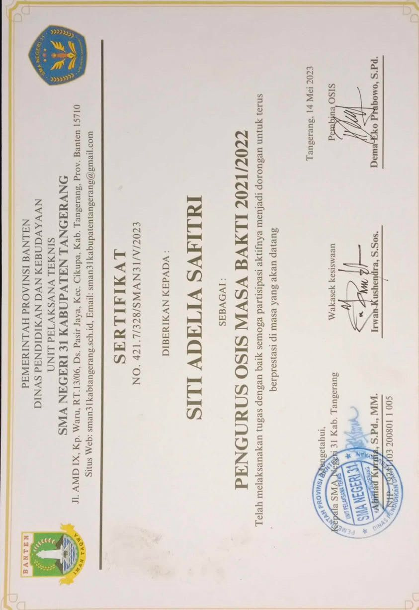
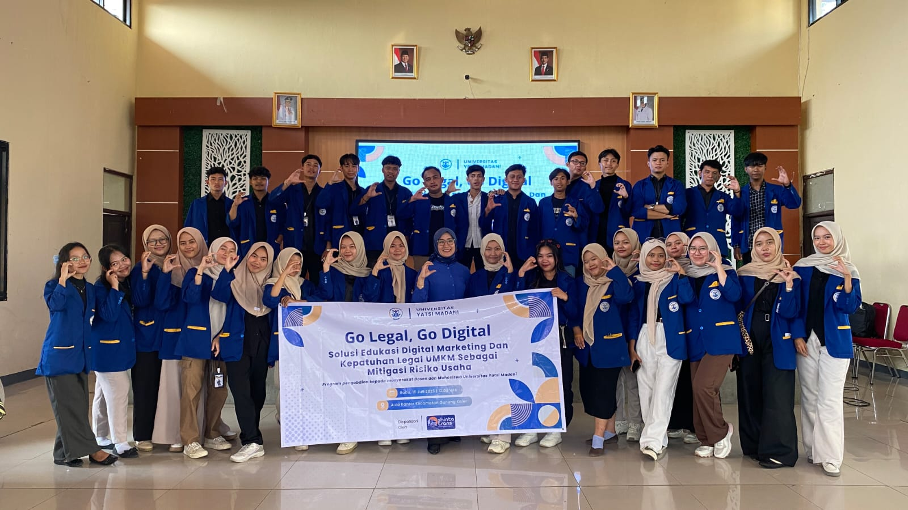
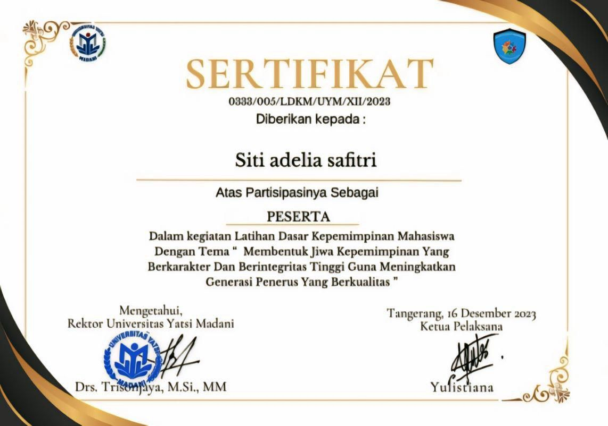
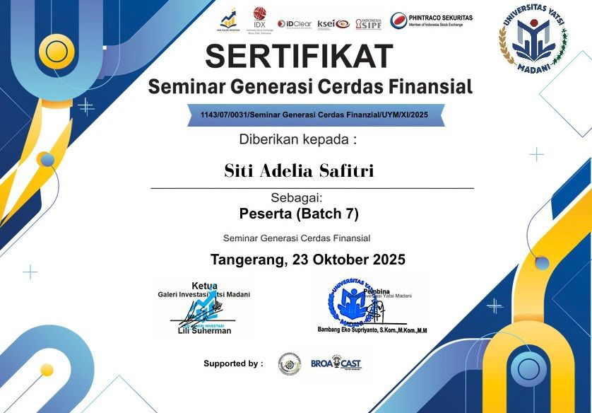

Gallery









Digital Business | Creative | Future Entrepreneur
Saya, Siti Adelia Safitri, mahasiswa semester 6 Fakultas Teknologi dan Bisnis, Program Studi Bisnis Digital di Universitas Yatsi Madani.
Memiliki pengalaman kerja yang variatif, mulai dari manajemen ritel hingga pendidikan anak usia dini.
Memiliki keterampilan analitis dalam pengelolaan keuangan (Excel), kreativitas dalam pembuatan konten promosi, serta kemampuan UI/UX dan pemahaman dunia digital.
Aktif organisasi sebagai Ketua Kewirausahaan di masa SMA dan Divisi Humas saat ini.
Selain itu, saya memiliki minat besar dalam pengembangan bisnis digital dan inovasi teknologi, serta terus mengasah kemampuan dalam menciptakan solusi kreatif yang relevan dengan kebutuhan pasar modern.
Saya terbiasa bekerja secara mandiri maupun dalam tim, memiliki semangat belajar tinggi, serta mampu beradaptasi dengan cepat di lingkungan yang dinamis dan berkembang.
Dengan kombinasi pengalaman, keterampilan, dan passion di bidang digital, saya siap berkontribusi secara profesional serta memberikan nilai tambah dalam setiap peluang yang saya jalani.
biMBA AIUEO & SMART Education Center
SDN Pasir Gadung II
2011 - 2017
Nakbar: Kenangan masa kecil penuh keceriaan, belajar dasar kehidupan, dan persahabatan pertama yang tak terlupakan.
SMPN 03 Cikupa
2017 - 2020
Masa remaja awal yang penuh cerita, mulai menemukan jati diri, serta kebersamaan teman yang penuh warna.
SMA N 31 Kab. Tangerang
2020 - 2023
Masa paling berkesan dengan pengalaman organisasi, perjuangan belajar, dan momen kebersamaan yang tidak akan terulang.
Universitas Yatsi Madani
2023 - Sekarang
Fakultas Teknologi & Bisnis - Bisnis Digital
Perjalanan menuju masa depan, membangun mimpi, mengembangkan skill, dan memperluas relasi untuk dunia profesional.



